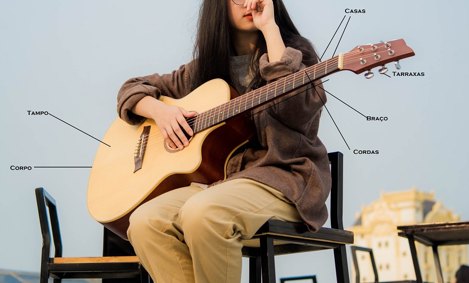
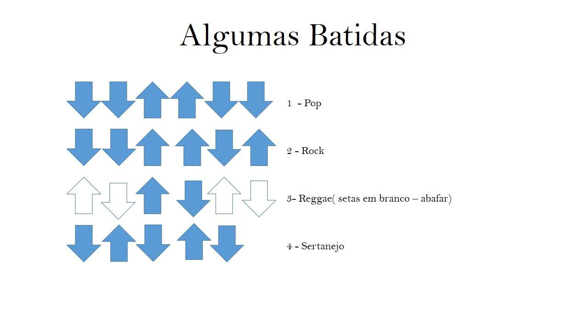

- Home
- >
- Aulas
- >
- Dicas
Violão, meu amor ;*
Senhoras e senhores eis aqui o queridinho...
Sim, o queridinho!
Dentre 100, 99 querem aprender violão. Não por acaso, é fácil de transportar, tem um som agradável, está presente nas musicas de sucesso, e possui um belo design ;) Ele é muito PoP.
Quem toca violão possui um amigo inseperavél, que vai embalar as noites com as melodias que tocam primeiro no coraçao. Sim, o negócio é sériuu...
Primeiros Passos
Na foto acima, conseguimos conhecer um pouco acerca de suas peças, vamos entender agora como segura lo:
- Sente em uma cadeira com a coluna reta
- Dobre as pernas
- Coloque o violão no colo
- Equilibre a base, ou encaixe aquela curva em sua coxa
Mãos
Caso você seja destro, a mão direita vai fazer a batida(ritmo) e a mão esquerda, os acordes (apertar a sequência de notas com os dedos.)
Mas e se eu for canhoto?
Existem canhatos que optam por trocar a sequência das cordas, e aprender do lado ao contrário, como?
Paul do Beatleas fazia isso, neste caso ele esta tocando baixo, mas ele toca o violão desta forma também.
Note, ele é o único que toca ao contrário no video. Aqui no Brasil a Paula Fernades do sertanejo tambem consegue tocar assim. Observe que todos os musicos no vídeo estão tocando como destros, apenas ela toca como canhoto. É uma técnica um tanto complexa. ideal para aqueles que não abrem mão de suas características.
Alguns canhotas preferem aprender da maneira convencional, o posicionamento fica como de um destro, flui normalmente, afinal, tudo é treinamento!
Afinação
Instrumento de corda precisa de afinação, clique no link e confira a Afinação.
A afinação é essencial, recomenda-se afinar o violão todas as vezes em que for toca-lo. Isso inflência diretamente no desempenho e musicalidade.
Ritmo
Antes da dança tem a música e para que a dança role legal é necessário que o ritmo das músicas comuns sejam fixos e constantes.
Portanto ritmo esta ligado com o movimeto, com a constância.
Para realizar a batidas abaixo utilize palheta. Dessa forma tente manter o mesmo tempo entre as batidas se necessário utilize o metrônomo. Clica aqui
←Voltar